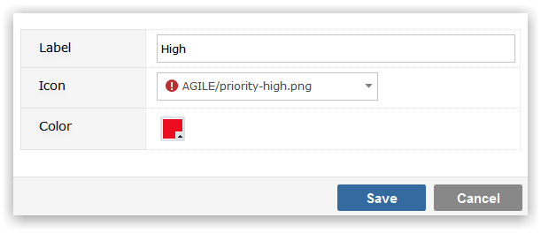

Priority Codes are optional but it is recommended that you create at least two Priority codes, to represent higher and lower priority items, as an aid to sorting and filtering your data.
Make sure that you have selected the Project Template that you wish to maintain Priority values for from the drop-down list.
To Add a new Priority value, click on the Add button. You will be prompted to provide:

Click Save to create the Priority value.
To maintain the Label, Comment, Icon or Color values of the Priority, click in the appropriate field and use Inline editing to easily and instantly change the field value.
To delete a Priority click on the delete icon to the right of the screen. You will be required to specify an alternative value that any items in the deleted Priority will be recoded to. This is to ensure that there are no orphaned records in your data, with Priorities that do not exist in the Template.
To the left of the Priority icon is a drag handle. Position the mouse over this region and you can drag-drop the Priority codes to reorder them. Priority codes will appear in the Visual Planner in the order in which they appear on the Template.